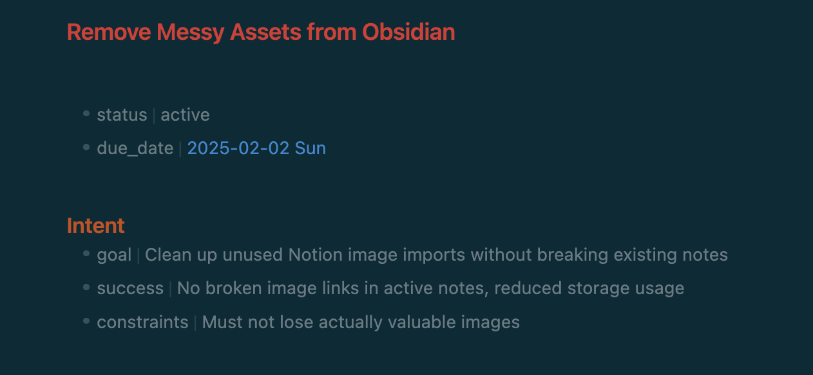
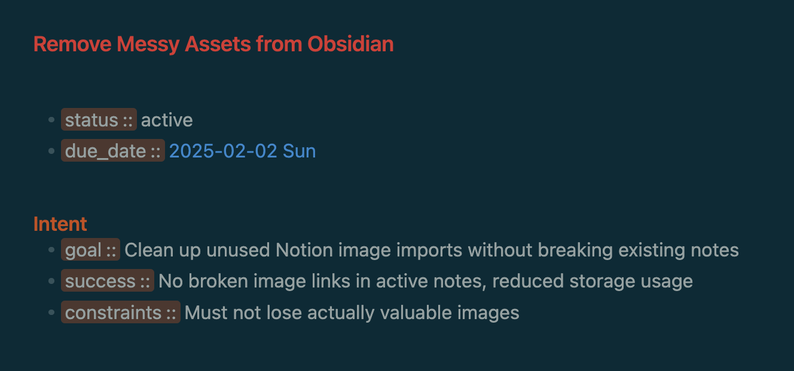

Make Obsidian Inline Dataview Properties Prettier With This CSS
I’ve found it far more useful to use Obsidian properties when I see them. Luckily, dataview makes that simple enough with the property:: value syntax. I’ve become a heavy user of it, aggregating my learning:: and decision:: making across domains, leading to a far more interesting sense of my emergent understanding of the world than a tagging or folder structure would.
But I kept bumping into a nit of a flaw that cost me focus: I didn’t like how in-line properties rendered. I stick with the Minimal theme for its sleek design and feature-packed extensions, but its visualization of properties no matter the format didn’t quite catch my eye:

It feels picky of me but it looks dull and I feel my mind get bored before I read it. I’ve learned a lot about how I think, and I have learned to trust that voice. As minor as it is, it’s the kind of friction that leads me to leave one structure to another like I talked about in my PKM post. When I do listen to that voice, there is a subtle irony to something I intentionally kept visible is muted in comparison to other text. It could be normal for others, but I want to really see my properties.
To draw my eye, I thought about how text highlighting has the right logic built in already: make it pop and complement the theme’s color palette. So after some searching and code assistance I got something I’m happy with:

It’s already doing the trick for me. I notice my properties, but even more so I’m drawn to them. There’s a little gravitational pull that was once a push, and it makes me happy. Here is the code as of today (Jan 19, 2025).
/* Goal to make in-line dataview properties with brackets more visible */
/* Enable under Appearance > CSS Snippets */
body .dataview .inline-field-standalone-value,
body .dataview .inline-field-value {
background: var(--background-primary);
font-size: var(--font-adaptive-normal);
color: var(--text-normal);
}
/* Additional styles to make Dataview key look like ==highlight== syntax */
body .dataview span.inline-field-key {
background-color: var(--text-highlight-bg);
color: var(--text-highlight-fg);
padding: 0 0.2em;
border-radius: 0.2em;
font-size: var(--font-adaptive-large); /* Increase font size */
}
/* Ensure the :: syntax remains visible */
body .dataview span.inline-field-key::after {
content: "::";
color: var(--text-highlight-fg);
}
The (latest form of) the code snippet is here: better-dataview.css · GitHub Gist